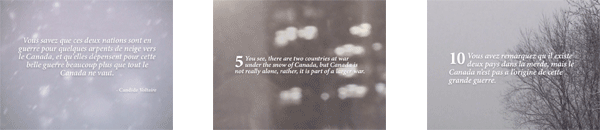

Video. Duration 4 minutes, soundtrack with music and translations.
PLAY AN EXCERPT >>
|  |
The project involves the translation of a passage from Voltaire’s novel Candid: “Vous savez que ces deux nations sont en guerre pour quelques arpents de neige vers le Canada, et qu’elles dépensent pour cette belle guerre beaucoup plus que tout le Canada ne vaut”
The passage has been, through a history of misinterpretation and detachment from it’s original source, the base for the expression ”a few acres of snow” regularly quoted by Canadians, and particularly Quebecois, who want to prove that Canada is worth much more than Voltaire’s dismissive perception.
(http://en.wikipedia.org/wiki/A_few_acres_of_snow for more information on this)
First the quote is translated to English, by an English-Canadien. The next person, a French-Canadien translates the new quote back to French, etc (the principle of “broken telephone”). This is repeated 10 times, involving 10 Canadiens living in Montréal. Along the way, the quote, originally reflecting the war between England and France, changes, showing the flexibility of our understanding based on our current life and knowledge.